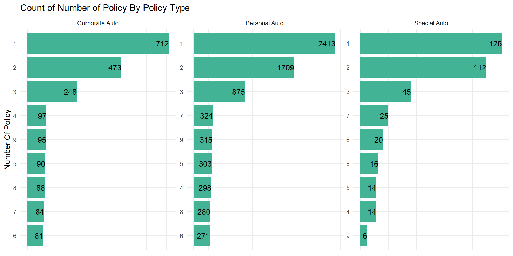

data_np <- data %>%
select(number_of_policies, total_claim_amount) %>%
mutate(number_of_policies = as.character(number_of_policies))
num_cat_sumy(data_np, total_claim_amount, number_of_policies, sumy_fun = sum)corr_lysis(data, number_of_policies, total_claim_amount)## # A tibble: 1 × 8
## estimate statistic p.value parameter conf.low conf.high method alter…¹
## <dbl> <dbl> <dbl> <int> <dbl> <dbl> <chr> <chr>
## 1 -0.00235 -0.225 0.822 9132 -0.0229 0.0182 Pearson's pro… two.si…
## # … with abbreviated variable name ¹alternativeThe number of policies does not have a positive relationship with the total amount claimed by policyholders.
data %>%
mutate(number_of_open_complaints = as.character(number_of_open_complaints)) %>%
count_obs(number_of_open_complaints)Few customers made more than 2 complains about the company products and services.
data %>%
group_by(number_of_policies, number_of_open_complaints) %>%
count(name = "count") %>%
ungroup() %>%
ggplot(aes(factor(number_of_policies), count)) +
geom_col(fill = "#42b395") +
facet_wrap(vars(number_of_open_complaints), ncol = 3, scales = "free_y") +
theme_minimal() +
labs(x = "Number Of Policies", y = "Count",
title = "Count of Number of Policy By Number of Open Complain")data %>%
group_by(number_of_policies, number_of_open_complaints) %>%
count(name = "count") %>%
ungroup() %>%
left_join(count(data, number_of_policies), by = "number_of_policies") %>%
mutate(prop = count/n*100) %>%
select(-c(count, n)) %>%
pivot_wider(number_of_policies,
names_from = number_of_open_complaints,
values_from = prop, values_fill = 0)## # A tibble: 9 × 7
## number_of_policies `0` `1` `2` `3` `4` `5`
## <dbl> <dbl> <dbl> <dbl> <dbl> <dbl> <dbl>
## 1 1 79.5 10.8 4.00 3.05 2.06 0.584
## 2 2 79.4 11.6 4.18 3.14 1.22 0.436
## 3 3 79.1 11.5 4.37 2.31 2.05 0.685
## 4 4 77.8 13.9 4.16 2.69 0.978 0.489
## 5 5 80.3 8.85 2.95 4.42 1.23 2.21
## 6 6 80.1 9.14 4.30 3.49 2.42 0.538
## 7 7 79.0 10.9 4.16 3.93 1.15 0.924
## 8 8 78.4 12.0 4.17 3.65 1.30 0.521
## 9 9 80.5 9.62 4.33 5.05 0.481 0A lager number of customers for all numbers of policy owned made zero complains.
data %>%
count(number_of_policies, policy_type, name = "count") %>%
ggplot(aes(count,
reorder_within(factor(number_of_policies), count, policy_type))) +
geom_col(fill = "#42b395") +
facet_wrap(vars(policy_type), scales = "free", ncol = 3) +
scale_y_reordered() +
labs(y = "Number Of Policy",
title = "Count of Number of Policy By Policy Type") +
geom_text(aes(label = count), hjust = 1.0) +
theme_minimal() +
theme(axis.text.x = element_blank(), axis.title.x = element_blank())
For each type of policy, customers with 1 to 3 policies at most have the highest number of customers. Special auto have the least number of customers for each number of policy. Also customers with 6 policies have the lowest count for corporate and personal auto policy types.
Previous Various Features Used In
Determining Auto Premium
Next Sales Channels And Vehicle
Classification